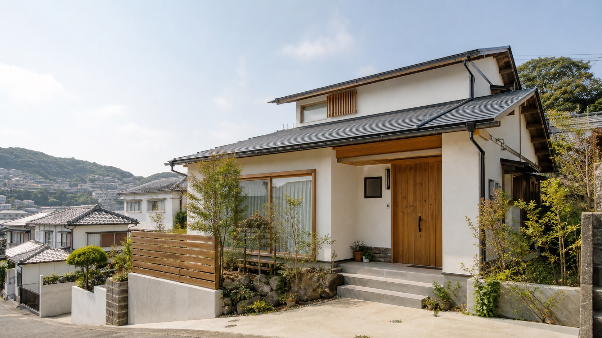
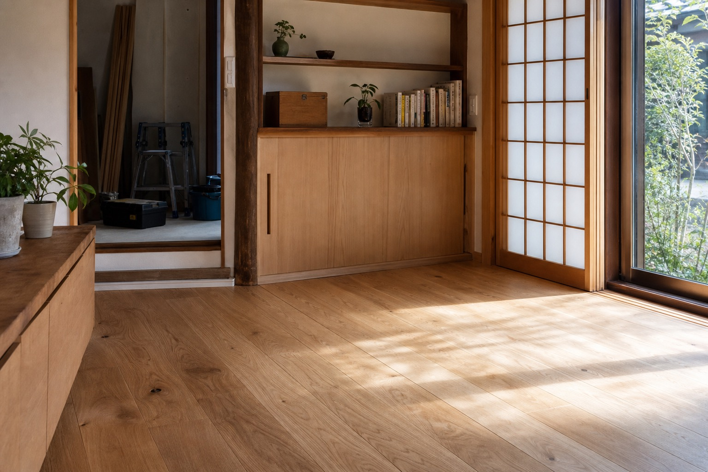
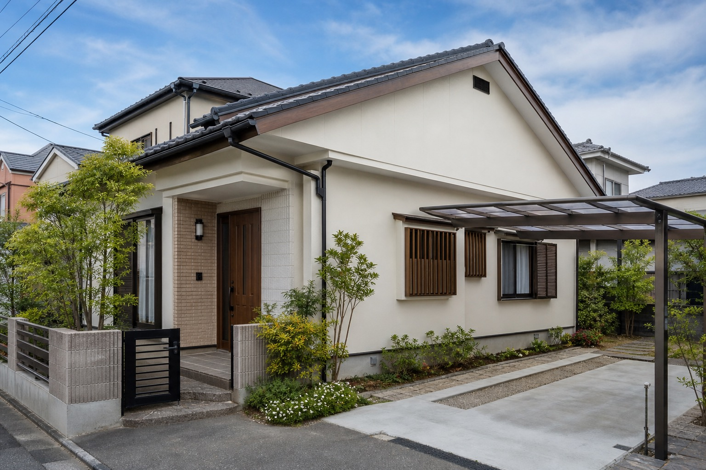
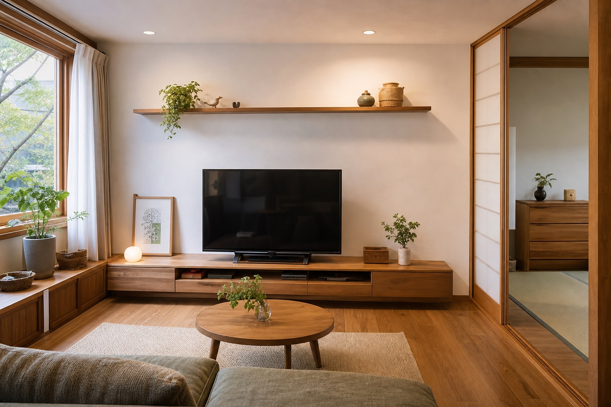
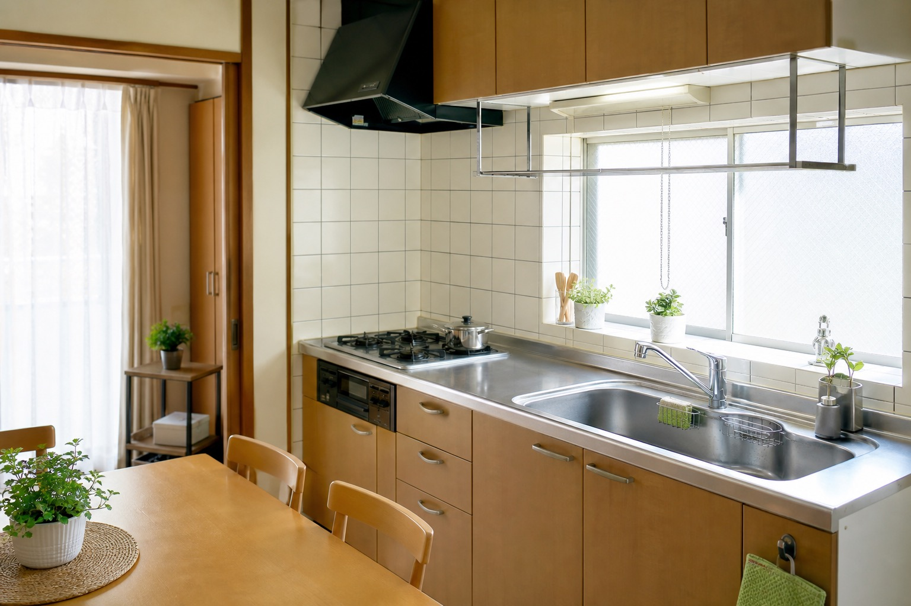

大工・内装工事
床鳴り、間取り変更、クロス・フローリング貼替、壁塗装、新築工事・リフォーム工事。

仮画像長崎の住まいと施設の小さな困りごとへ
大工・内装工事、家具製作、ハウスメンテナンス、ハウスクリーニング、重機運転まで。さくら建装の幅広い対応力を、見やすく相談しやすい形に再編集した提案用デモです。
Concept

既存サイトでは、2018年の独立開業、2024年の社名変更、代表の多様な職歴と資格、そして「お客様の困ったに即提案・解決したい」という姿勢が丁寧に語られています。
このデモでは、その情報を長文の会社紹介ではなく、依頼前の不安を減らす導線に変換。住まいの補修、家具、クリーニング、園や施設の管理まで、相談の入口を分かりやすく整えました。
Service
床鳴り、間取り変更、クロス・フローリング貼替、壁塗装、新築工事・リフォーム工事。
ダイニングテーブル、テレビ台、室外機囲い、仏壇、小上がり階段、購入家具の組立代行。
草刈り・剪定・伐採、クロス補修、フローリング補修、手すり取付、水まわり・屋外補修。
エアコン、レンジフード、換気扇、洗濯機、浴室、キッチン、フローリング、窓の清掃。
トラック、パワーショベル、高所作業車、フォークリフト、トラクターのオペレーター代行。
Why Sakura Kensou
水泳インストラクター、電気屋、看板屋、建築設計を経て多能工大工へ。既存サイトに掲載されている代表経歴からは、現場で必要な判断を横断的に行う会社像が読み取れます。
Gallery
以下は提案用の仮画像です。実在の施工実績名や口コミは作成していません。



For Facilities
既存サイトには、木製家具製作・補修、内装補修、草刈り・剪定、エアコンクリーニング、看板デザイン・施工など、保育園・幼稚園向けの専用ページがあります。一般家庭だけでなく、施設管理の相談先としても見せ方を強化できます。
Company
Contact
電話の前に内容を整理できる、営業提案用のデモフォームです。
このフォームは営業提案用サンプルです。実際には送信されません。
Next Action